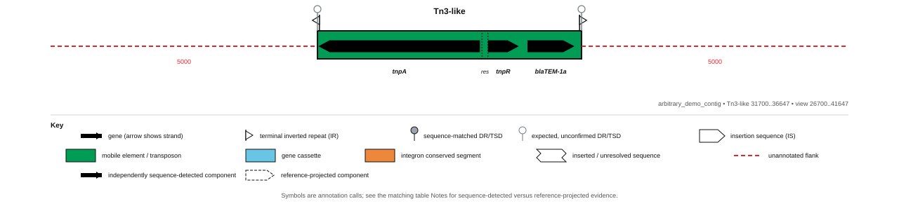

arbitrary-demo.fasta Tn1/Tn2/Tn3 proof
PASS: 3 complete loci passed every component, grammar, match and projection check; 0 expected partial loci retained incomplete evidence; 0 loci failed validation.
This report is generated from the annotation evidence. It is not a hand-authored interpretation.
PASS
Tn1-like
arbitrary_demo_contig: 8001..12949 (+)
rule-based type Tn1component scores {"Tn1": 99.592, "Tn2": 64.818, "Tn3": 98.067}complete-element lookup not runcomponent structure 0 inserted bp; 0 deleted bpgrammar completedetected components 6
| Role | Call | Position | Strand | Identity | Coverage | Status |
|---|---|---|---|---|---|---|
| terminal_IR | IRL | 8001..8038 | . | 100.0% | 100.0% | intact |
| blaTEM | blaTEM-2 | 8148..9008 | - | 99.42% | 100.0% | intact |
| tnpR | tnpR | 9191..9748 | - | 99.1% | 100.0% | intact |
| res | res | 9754..9867 | . | 100.0% | 100.0% | intact |
| tnpA | tnpA | 9911..12916 | + | 99.57% | 100.0% | intact |
| terminal_IR | IRR | 12912..12949 | . | 100.0% | 100.0% | intact |
mara mara table hierarchy cell format annotation json annotation gff3
{kind=link}
MARA locus map

Original hierarchical view

PASS
Tn2-like
arbitrary_demo_contig: 19950..25699 (+)
rule-based type Tn2component scores {"Tn1": 65.067, "Tn2": 100.0, "Tn3": 64.712}complete-element lookup not runcomponent structure 799 inserted bp; 0 deleted bpgrammar completedetected components 6
| Role | Call | Position | Strand | Identity | Coverage | Status |
|---|---|---|---|---|---|---|
| terminal_IR | IRL | 19950..19987 | . | 100.0% | 100.0% | intact |
| blaTEM | blaTEM-1b | 20097..20957 | - | 100.0% | 100.0% | intact |
| tnpR | tnpR | 21140..21697 | - | 100.0% | 100.0% | intact |
| res | res | 21703..21816 | . | 100.0% | 100.0% | intact |
| tnpA | tnpA | 21860..25666 | + | 100.0% | 100.0% | complete_with_insertion |
| terminal_IR | IRR | 25662..25699 | . | 100.0% | 100.0% | intact |
mara mara table hierarchy cell format annotation json annotation gff3
{kind=link}
MARA locus map

Original hierarchical view
PASS
Tn3-like
arbitrary_demo_contig: 31700..36647 (-)
rule-based type Tn3component scores {"Tn1": 98.476, "Tn2": 64.828, "Tn3": 100.0}complete-element lookup not runcomponent structure 0 inserted bp; 0 deleted bpgrammar completedetected components 6
| Role | Call | Position | Strand | Identity | Coverage | Status |
|---|---|---|---|---|---|---|
| terminal_IR | IRR | 31700..31737 | . | 100.0% | 100.0% | intact |
| tnpA | tnpA | 31733..34737 | - | 100.0% | 100.0% | intact |
| res | res | 34781..34894 | . | 100.0% | 100.0% | intact |
| tnpR | tnpR | 34900..35457 | + | 100.0% | 100.0% | intact |
| blaTEM | blaTEM-1a | 35640..36500 | + | 100.0% | 100.0% | intact |
| terminal_IR | IRL | 36610..36647 | . | 100.0% | 100.0% | intact |
mara mara table hierarchy cell format annotation json annotation gff3
{kind=link}
{kind=link}
MARA locus map

Original hierarchical view